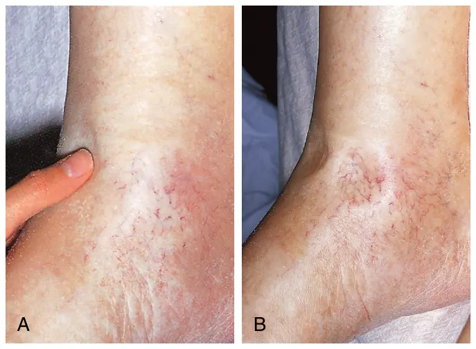

نسخه استخراجشده؛ ترجمه یا تأیید علمی انجام نشده است. وضعیت: captured
خانم ۷۲ سالهای که سالها فشار خون بالا داشته روی یونیت مینشیند. مچ پاهایش ورم دارد. تا پشتی صندلی را میخوابانی به سرفه میافتد و میگوید: «شبها هم با سه بالش میخوابم.» چه چیزی را نباید از دست بدهی؟

نارسایی قلب یعنی بطن نمیتواند بهخوبی از خون پر شود یا آن را بیرون بدهد. بیشتر وقتها پایان راه یک بیماری دیگر است: بیماری کرونر (۶۰ تا ۷۵٪ موارد)، فشار خون بالا، کاردیومیوپاتی و بیماری دریچهای.
سادهترین پرسش غربالگری: «میتوانی یک طبقه پله را بدون نفستنگی یا خستگی بالا بروی؟» این کار حدود ۴ MET انرژی میخواهد. بیماری که از پسش برنمیآید، چه با نارسایی قلب چه با بیماری کرونر، در خطر بیشتری است.
اول ببین نارسایی جبرانشده است یا جبراننشده. در نارسایی جبرانشده علائم نیست یا پایدار است؛ جبراننشده یعنی علائم تازه یا بدترشده.
شایعترین علتی که بیمار جبرانشده حین درمان به هم میریزد، نخوردن درست داروهاست. همیشه بپرس داروهای امروزش را خورده یا نه.
اشتباه رایج: نارسایی قلب بهتنهایی پروفیلاکسی آنتیبیوتیک نمیخواهد؛ فقط اگر دریچهی مصنوعی یا شرایط قلبی پرخطر دیگری هم در کار باشد.